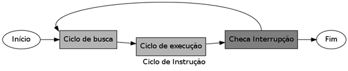

Interrupção
Introdução ao estudo de Interrupção
O Ciclo de Instrução pode agora ser visto modificado na Figura 2.5, “Ciclo de Instruções com interrupções” para atender às Interrupções. Todas as interrupções são recebidas e armazenadas internamente por um dispositivo chamado Gerenciador de Interrupções. Esse dispositivo é um chip, semelhante à uma CPU, mas bem mais simples.

Na maioria dos computadores eles vêm soldados na Placa-Mãe, mas podem também vir dentro do chip da CPU. Toda interrupção possui um código de identificação. Sempre que uma nova interrupção chega nesse gerenciador, ele armazena esse código em sua memória e manda um sinal para CPU através do Barramento de Controle. Durante seu Ciclo de Instrução, sempre que uma instrução é executada, antes de voltar para o Ciclo de Busca, a CPU checa se algum sinal de interrupção foi enviado pelo Gerenciador de Interrupção.
Quando não há uma interrupção, a execução volta ao Ciclo de Busca e o programa em execução continua a ser executado. Mas se houver uma interrupção, a CPU agora vai parar a execução do programa atual para atender a interrupção. Por exemplo, vamos supor que o usuário tenha pressionado uma tecla do teclado. O código armazenado pelo Gerenciador de Interrupção indica que a interrupção veio do teclado. A CPU pára sua execução do programa anterior e vai iniciar a execução de um programa especial, o Tratador de Interrupção. O código do dispositivo (aqui seria o teclado) serve para a CPU saber o endereço do Tratador de Interrupção que ela vai buscar da memória. Então, ao sair da Checagem de Interrupção, a CPU muda o endereço do PC para o endereço do Tratador de Instrução. Assim, no Ciclo de Busca a próxima instrução a ser trazida da memória e posteriormente executada será a do tratador do teclado.
Cada tipo de interrupção precisa de um tratamento específico a ser feito. No caso do teclado, o tratador vai checar que tecla foi pressionada. Isso é feito através de uma leitura à memória do teclado (sim, todos os dispositivos possuem uma pequena memória) para saber que tecla foi pressionada. Dependendo da tecla, uma operação diferente será executada. Geralmente, a CPU adiciona o código da tecla pressionada num endereço específico de memória. Cada programa, lendo essa informação, tomará sua própria decisão sobre o que deve ser feito. O que acontece é que apenas o programa ativo no momento, vai ler esse conteúdo, executar a ação da tecla e limpar essa área de memória. Se o programa for um editor de texto, por exemplo, o código pode representar escrever a letra pressionada na posição atual do cursor dentro do texto.
Quando esse processo encerra, o tratamento é encerrado, e a CPU deve voltar à execução do programa que havia sido interrompido. Isso só é possível porque, antes de passar à execução do Tratador de Interrupção, a CPU salva os conteúdos de todos os registradores da CPU (inclusive o PC e o IR). Então, antes de devolver a execução para o programa, a CPU restaura todos os valores dos registradores antes salvos. Dessa forma, o programa retoma exatamente do ponto em que parou.
As interrupções também ocorrem se o próprio programa em execução executar uma operação ilegal. Isso é feito para evitar que a CPU entre em erro. Por exemplo, se um programa tentar acessar uma área da memória que é proibida para ele, como a área de outro programa ou do Sistema Operacional. Nesse caso, o programa é interrompido e não volta mais a executar, ele é finalizado e a execução é devolvida ao Sistema Operacional. Algo semelhante ocorre em caso de defeitos em alguns dispositivos. Por exemplo, se um programa estiver lendo um arquivo que está em um pendrive, e esse pendrive é removido subitamente, uma interrupção é lançada e o programa é encerrado, já que ele não faz mais sentido estar em execução.

Computação em nuvem?
Os principais provedores globais de nuvem pública hoje, são a Amazon AWS, Microsoft Azure IBM e Google.

Nova Tecnologia
Utilizada pela Silicon Quantum Computing Pty Limited e deverão ser usadas para a criação e comercialização de computadores quânticos em larga escala.

O que é nanotecnologia?
Entendimento e controle da matéria em nanoescala. Ela atua no desenvolvimento de materiais e componentes para diversas áreas.